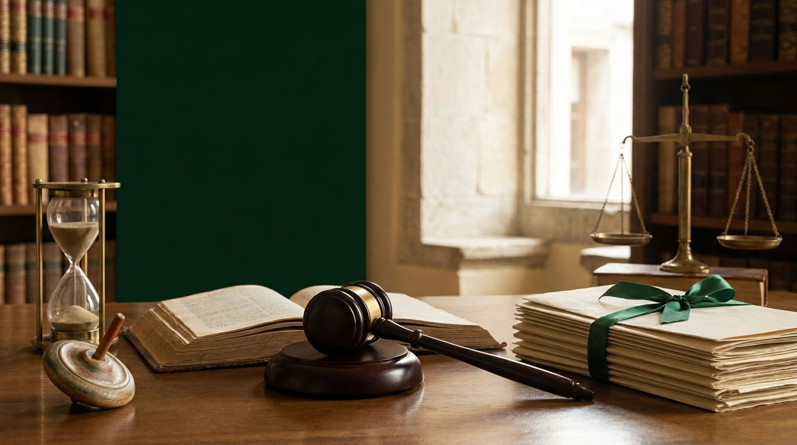

Lavoro minorile in Italia: cosa dice il 4° Report UNICEF e cosa rischiano le imprese
Il 4° Report UNICEF Italia, presentato nella Giornata mondiale contro lo sfruttamento del lavoro minorile, fotografa un fenomeno in crescita tra il 2020 e il 2025, con dati allarmanti sugli infortuni dei più giovani. Per le imprese che impiegano minorenni cambia poco sul piano normativo, ma molto su quello del rischio: i controlli e le responsabilità restano stringenti. Vediamo perché.

Il dato e perché conta
Il quarto Report di UNICEF Italia, diffuso il 12 giugno, segnala un incremento del lavoro minorile nel periodo 2020-2025. L'analisi incrocia fonti istituzionali (INPS, INAIL, ISTAT) e mette in evidenza un aspetto che riguarda direttamente chi gestisce attività d'impresa: l'aumento degli infortuni tra i lavoratori più giovani, in particolare nella fascia 15-17 anni e fino ai 19 anni.
Non si tratta solo di un tema sociale. Per il datore di lavoro impiegare un minorenne comporta obblighi specifici e una responsabilità rafforzata, soprattutto in materia di sicurezza. I numeri del Report rendono prevedibile un'attenzione crescente da parte degli organi di vigilanza.
Inquadramento normativo
La cornice internazionale è data dall'articolo 32 della Convenzione ONU sui diritti dell'infanzia e dell'adolescenza (ratificata in Italia con la Legge 27 maggio 1991, n. 176), che riconosce al minore il diritto di essere protetto dallo sfruttamento economico e da lavori pericolosi o pregiudizievoli per la sua salute e il suo sviluppo.
Sul piano interno, la disciplina cardine resta la Legge 17 ottobre 1967, n. 977, sulla tutela del lavoro dei bambini e degli adolescenti. La norma distingue tra bambino (chi non ha ancora concluso l'obbligo scolastico) e adolescente (minore di 18 anni che ha assolto l'obbligo). Fissa l'età minima di ammissione al lavoro a 16 anni, salvo eccezioni, e vieta ai minori una serie di lavorazioni elencate in un apposito allegato perché ritenute pericolose.
A queste regole si aggiunge il D.Lgs. 81/2008 (Testo Unico Sicurezza), che impone al datore di lavoro una valutazione dei rischi specifica per i lavoratori minorenni, tenendo conto della loro inesperienza e del minore sviluppo. È proprio su questo punto che il Report UNICEF richiama maggiore vigilanza.
Implicazioni pratiche per le imprese
Chi assume un minorenne deve gestire una serie di adempimenti che non si esauriscono nel contratto. Servono la visita medica preventiva e quelle periodiche, il rispetto dei limiti di orario (massimo 8 ore giornaliere e 40 settimanali per gli adolescenti), il divieto di lavoro notturno e l'esclusione dalle mansioni vietate.
L'aumento degli infortuni segnalato dal Report ha un risvolto immediato: in caso di evento lesivo a danno di un minore, la posizione del datore di lavoro è esposta su più fronti. Oltre alle sanzioni amministrative previste dalla L. 977/1967, possono configurarsi profili di responsabilità penale (lesioni colpose, omissione di cautele) qualora emerga una valutazione del rischio carente o l'adibizione a lavorazioni non consentite.
Va ricordato che il consenso del minore o dei genitori non sana l'eventuale violazione. Gli obblighi gravano sul datore di lavoro e non sono derogabili per accordo tra le parti.
Cosa fare in concreto
- Verificate l'età e l'idoneità. Acquisite il certificato di idoneità medica prima dell'inizio dell'attività e programmate le visite periodiche; conservatene traccia documentale.
- Aggiornate la valutazione dei rischi. Inserite una sezione dedicata ai lavoratori minorenni nel DVR, escludendo espressamente le mansioni vietate dall'allegato alla L. 977/1967.
- Controllate orari e turni. Eliminate il lavoro notturno e i turni eccedenti i limiti di legge; impostate i sistemi di rilevazione presenze in modo coerente.
- Formate in modo mirato. Garantite una formazione sulla sicurezza calibrata sull'inesperienza del minore, con affiancamento nelle prime fasi.
- Conservate la documentazione. In caso di controllo o infortunio, la prova del rispetto degli obblighi si dimostra solo con atti scritti e datati.
La crescita del fenomeno fotografata da UNICEF rende prevedibile un'intensificazione dei controlli ispettivi. Per le imprese che impiegano lavoratori giovani, un audit interno sugli adempimenti è la misura più efficace per ridurre il rischio prima che si traduca in contestazione.
Disclaimer
Contributo informativo a cura di Tamburro & Partners - Avv. Giuseppe Tamburro. Non costituisce parere legale.
Ogni storia di lavoro ha i suoi tempi.
Se gestisci HR e vuoi un confronto su contenzioso, ispezioni o licenziamenti, scrivi allo studio. Ti rispondiamo entro un giorno lavorativo.